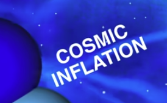
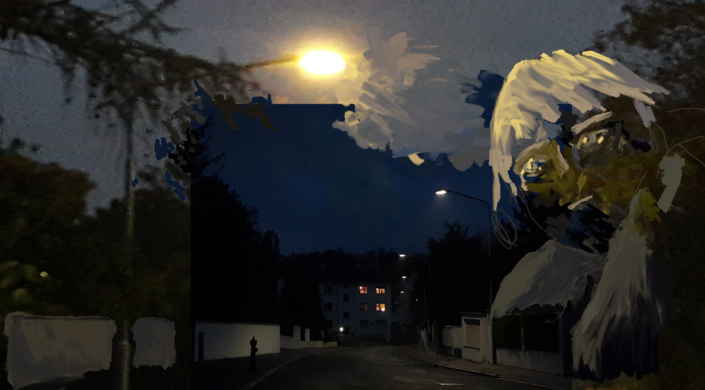

3.09.2025 updated index, erker open call
LINKS
Erker open call my webzine on things I've been thinking of at the end of the summer.
2025 , updating very slowly
 sketches/drawings ('24) sketches/drawings ('23)sketches/drawings ('22ish) sketches/drawings ('21 annd older)
curbside physics Mostly exports of side-notes from lectures, sketchbooks, etc. on physics.
video reflection on movement 47 seconds of removing cars
Interactive website (DEPRECATED website) of urban cycling in Bratislava, collaboration with my brother
Cycling video, part of exploring the format and possibilities of the project.

(python library for the diffraction patterns: https://github.com/rafael-fuente/diffractsim)
It's a bit refreshing to be so busy, at the same time I find myself in brief moments of intermission. (Pötzleinsdorf) .
Completed prompt "interface" for my winter '21 application to the Digital Arts programme at Academy of Fine Arts and Design in Bratislava (AFAD/VŠVU).
Určite sú ľudia jednou z najdôležitejších častí života. Neustále sa ovplyvňujeme, máme radi, komunikuje, spolunažívame, ale nikdy sa naozaj nestretneme. Celý život jeden okolo druhého oscilujeme a priťahujeme sa. Čím bližšie sa k sebe však dostaneme, tým viac zistíme, že sa jeden druhého nikdy ozajstne nedokážeme dotknúť. Od istého bodu sa rovnako ako častice viac nevieme priblížiť, ani nie vôľou, ale len kvôli vrodene inherentnej ľudskosti. Dokáže nadviazať spojenie, vymieňať si medzi sebou informácie, nikdy však nedokážeme prekročiť dané rozhranie. Toto ľudské rozhranie: napriek tomu, že sme všetci rovnakí, sme vždy sami; je skoro ako kebyže, sme boli raz dávno za niečo potrestaní. A preto, dnes viac, ako možno hocikedy predtým, každý rozumieme tejto inherentne ľudskej diskrétnosti, avšak rovnako sa stále neúnavne snažíme toto rozhranie prekročiť.
Stránka je hostovaná pomocou github pages, programovaná s pomocou Sass extension pre css. Js je použitý pre hornú sínusoidovú animáciu. Fotky sú z vlastnej tvorby, Tokyo 2019, Viedeň 2021, Londýn 2021, podľa poradia. Ilustrácie, kresba a konečná animácia je robená v Adobe Photoshop.